Clase 3: Punto Crítico y Ley de los Estados Correspondientes
Qué predice la ecuación de Van der Waals cuando se la exprime: temperatura de Boyle, punto crítico, y el hallazgo de que en variables reducidas todos los gases obedecen la misma ecuación.
Temas que cubre
- Desarrollo de $Z$ en serie de potencias de $1/\bar V$ y de $P$
- Pendiente inicial $(\partial Z/\partial P)_T$ en $P \to 0$ y qué efecto domina según su signo
- Efecto de la temperatura sobre la pendiente inicial (caso del metano)
- Temperatura de Boyle $T_B$: dónde el gas real imita al ideal en un amplio rango de $P$
- Isotermas de un gas real vs. isotermas de Van der Waals
- El punto crítico como punto de inflexión con tangente horizontal
- Constantes críticas $\bar V_c$, $P_c$, $T_c$ en función de $a$ y $b$ (y su inversa)
- Vapor sobreenfriado y líquido sobrecalentado: los tramos no físicos de la isoterma
- Variables reducidas y ley de los estados correspondientes
- Otras ecuaciones de estado (virial, Berthelot, Redlich-Kwong, Dieterici)
Conceptos clave
Pendiente inicial de $Z$
Evaluar $(\partial Z/\partial P)_T$ en $P=0$ deja $\frac{1}{RT}\left(b - \frac{a}{RT}\right)$. El signo de $b - a/RT$ decide todo: positivo si domina el tamaño molecular, negativo si dominan las atracciones. Una sola expresión explica los dos comportamientos experimentales.
Temperatura de Boyle
La $T$ donde la pendiente inicial se anula: $T_B = a/Rb$. Ahí la curva $Z$ vs. $P$ es tangente a la del gas ideal en $P=0$, y el gas real se comporta idealmente en un intervalo amplio de presiones. $\mathrm{H_2}$: 116,4 K · $\mathrm{N_2}$: 332 K · $\mathrm{CH_4}$: 506 K · $\mathrm{CO_2}$: 600 K.
Punto crítico
La isoterma $T = T_c$ tiene un punto de inflexión con tangente horizontal: primera y segunda derivada de $P$ respecto de $\bar V$ se anulan simultáneamente. Sobre $T_c$ ya no hay distinción líquido–gas y no se puede licuar por compresión.
Tramos no físicos
Bajo $T_c$, Van der Waals predice una zona donde $(\partial P/\partial\bar V)_T > 0$ — comprimir aumentaría el volumen, algo mecánicamente inestable. En la realidad ahí ocurre la coexistencia líquido–vapor a presión constante. Los tramos cercanos sí se observan como estados metaestables: vapor sobreenfriado y líquido sobrecalentado.
Variables reducidas
$\pi = P/P_c$, $\tau = T/T_c$, $\phi = \bar V/\bar V_c$: cada gas medido en unidades de sus propias constantes críticas. Al reescribir Van der Waals en estas variables, $a$ y $b$ desaparecen.
Estados correspondientes
Dos gases a la misma $\tau$ y el mismo $\pi$ están en estados correspondientes y deben ocupar el mismo $\phi$. Esto convierte a Van der Waals en una ecuación tan universal como la del gas ideal, y justifica los diagramas generalizados de $Z$ vs. $P_r$.
Fórmulas fundamentales










Qué hay que entender
- Todo el contenido físico de la clase cabe en el signo de $b - a/RT$: es la competencia tamaño vs. atracción, y de ahí salen $T_B$ y la forma de las curvas $Z$ vs. $P$.
- $T_B = a/Rb$ y $T_c = 8a/27Rb$ implican $T_B/T_c = 27/8 = 3{,}375$: la temperatura de Boyle está siempre muy por encima de la crítica.
- Para hallar el punto crítico no hay que memorizar $\bar V_c = 3b$: se obtiene imponiendo que la primera y la segunda derivada se anulen. Ese cálculo es un ejercicio de control recurrente.
- $Z_c = 3/8$ es la prueba más limpia de que Van der Waals es aproximada: es un número fijo, y los gases reales no lo cumplen.
- La ley de estados correspondientes es lo que hace utilizables los diagramas generalizados de $Z$: basta $P_c$ y $T_c$ del gas para leer $Z$ del mismo gráfico que todos.
- Los tramos con $(\partial P/\partial \bar V)_T > 0$ no son un error del modelo: señalan que ahí el sistema se separa en dos fases. La construcción de Maxwell reemplaza ese tramo por una recta horizontal.